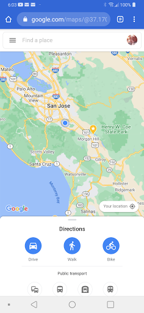
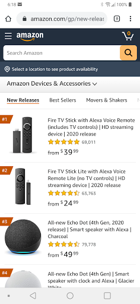

Design Principles Document
Margaret Yamada
Visual Hierarchy
Google Maps
google.com/maps

White Space and Clean Space
Amazon
amazon.com

Rule of Thirds
The Vermont Country Store
www.vermontcountrystore.com